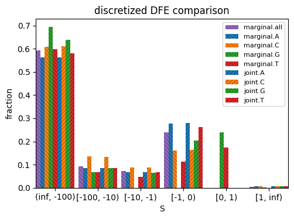

import fastdfe as fd
# instantiate parser
p = fd.Parser(
n=10,
vcf="../../resources/genome/betula/all.vcf.gz",
stratifications=[fd.DegeneracyStratification(), fd.AncestralBaseStratification()]
)
# parse SFS
spectra: fd.Spectra = p.parse()
Counting sites: 2439037it [00:41, 59006.72it/s]
INFO:fastdfe.Parser: Using stratification: [neutral, selected].[A, C, G, T].
INFO:fastdfe.Parser: Starting to parse.
Processing sites: 100%|██████████| 2439037/2439037 [05:29<00:00, 7402.38it/s]
INFO:fastdfe.PolyAllelicFiltration: Filtered out 0 sites.
INFO:fastdfe.DegeneracyStratification: Number of sites with valid type: 980934 / 2438327
INFO:fastdfe.AncestralBaseStratification: Number of sites with valid type: 980934 / 981644
INFO:fastdfe.Parser: Included 980934 out of 2439037 sites in total.
inf = fd.JointInference(
sfs_neut=spectra['neutral.*'].merge_groups(1),
sfs_sel=spectra['selected.*'].merge_groups(1),
shared_params=[fd.SharedParams(params=['p_b', 'S_b'], types='all')],
fixed_params=dict(all=dict(eps=0))
)
inf.run()
INFO:fastdfe.JointInference: Using shared parameters [SharedParams(params=['p_b', 'S_b'], types=['A', 'C', 'G', 'T'])].
INFO:fastdfe.JointInference: Including covariates: {}.
INFO:fastdfe.JointInference: Running marginal inference for type 'all'.
INFO:fastdfe.Discretization: Precomputing linear DFE-SFS transformation using midpoint integration.
WARNING:fastdfe.Optimization: The MLE estimate is within 1% of the upper bound for {'all.S_b': 100} and lower bound for {'all.p_b': 0}, but this might be nothing to worry about.
INFO:fastdfe.BaseInference: Successfully finished optimization after 90 iterations and 685 function evaluations, obtaining a log-likelihood of -37.51293539207359.
INFO:fastdfe.BaseInference: Inferred parameters: {'all.S_d': -53949.40796474576, 'all.b': 0.11366118571317227, 'all.p_b': 0.0035695995726279578, 'all.S_b': 100.0, 'all.eps': 0.0}.
INFO:fastdfe.JointInference: Running marginal inferences for types ['A', 'C', 'G', 'T'].
INFO:fastdfe.JointInference: Running marginal inference for type 'A'.
WARNING:fastdfe.Optimization: The MLE estimate is within 1% of the upper bound for {'all.S_b': 100} and lower bound for {'all.S_d': -100000.0, 'all.b': 0.01}, but this might be nothing to worry about.
INFO:fastdfe.BaseInference: Successfully finished optimization after 18 iterations and 120 function evaluations, obtaining a log-likelihood of -31.8637145820187.
INFO:fastdfe.BaseInference: Inferred parameters: {'all.S_d': -100000.0, 'all.b': 0.09522023308068508, 'all.p_b': 0.006569641953718728, 'all.S_b': 100.0, 'all.eps': 0.0}.
INFO:fastdfe.JointInference: Running marginal inference for type 'C'.
WARNING:fastdfe.Optimization: The MLE estimate is within 1% of the upper bound for {'all.S_b': 100} and lower bound for {}, but this might be nothing to worry about.
INFO:fastdfe.BaseInference: Successfully finished optimization after 85 iterations and 645 function evaluations, obtaining a log-likelihood of -32.31745271402025.
INFO:fastdfe.BaseInference: Inferred parameters: {'all.S_d': -4185.848942283267, 'all.b': 0.19089043196990704, 'all.p_b': 0.006698568663111203, 'all.S_b': 100.0, 'all.eps': 0.0}.
INFO:fastdfe.JointInference: Running marginal inference for type 'G'.
WARNING:fastdfe.Optimization: The MLE estimate is within 1% of the upper bound for {'all.S_d': -0.01, 'all.b': 10} and lower bound for {'all.S_b': 0.0001}, but this might be nothing to worry about.
INFO:fastdfe.BaseInference: Successfully finished optimization after 65 iterations and 460 function evaluations, obtaining a log-likelihood of -39.34106087078578.
INFO:fastdfe.BaseInference: Inferred parameters: {'all.S_d': -165.01887014239622, 'all.b': 10.0, 'all.p_b': 0.23938783194502647, 'all.S_b': 0.18076846503635546, 'all.eps': 0.0}.
INFO:fastdfe.JointInference: Running marginal inference for type 'T'.
WARNING:fastdfe.Optimization: The MLE estimate is within 1% of the upper bound for {} and lower bound for {'all.S_d': -100000.0, 'all.S_b': 0.0001}, but this might be nothing to worry about.
INFO:fastdfe.BaseInference: Successfully finished optimization after 46 iterations and 295 function evaluations, obtaining a log-likelihood of -39.58658201021626.
INFO:fastdfe.BaseInference: Inferred parameters: {'all.S_d': -100000.0, 'all.b': 0.15428875493961483, 'all.p_b': 0.17278065494179437, 'all.S_b': 0.0001, 'all.eps': 0.0}.
WARNING:fastdfe.Optimization: The MLE estimate is within 1% of the upper bound for {} and lower bound for {'A.S_d': -100000.0, 'A.b': 0.01, 'G.S_d': -100000.0, 'T.S_d': -100000.0, 'T.b': 0.01}, but this might be nothing to worry about.
INFO:fastdfe.JointInference: Successfully finished optimization after 172 iterations and 2365 function evaluations, obtaining a log-likelihood of -146.11003066065462.
INFO:fastdfe.JointInference: Inferred parameters: {'A.S_d': -100000.0, 'A.b': 0.09494023640538324, 'A.eps': 0.0, 'A.p_b': 0.006134398085142732, 'A.S_b': 44.275753637691146, 'C.S_d': -4941.28735561608, 'C.b': 0.1853951938413811, 'C.eps': 0.0, 'C.p_b': 0.006134398085142732, 'C.S_b': 44.275753637691146, 'G.S_d': -100000.0, 'G.b': 0.12013852605367349, 'G.eps': 0.0, 'G.p_b': 0.006134398085142732, 'G.S_b': 44.275753637691146, 'T.S_d': -100000.0, 'T.b': 0.1005073962112379, 'T.eps': 0.0, 'T.p_b': 0.006134398085142732, 'T.S_b': 44.275753637691146}.
inf.plot_discretized();
